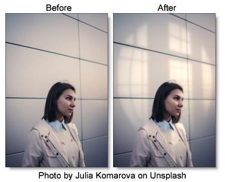
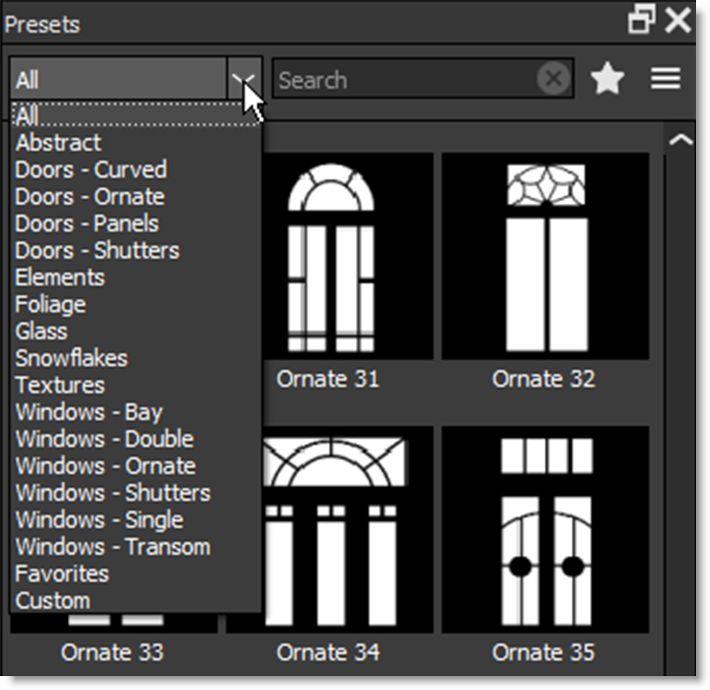
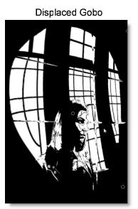
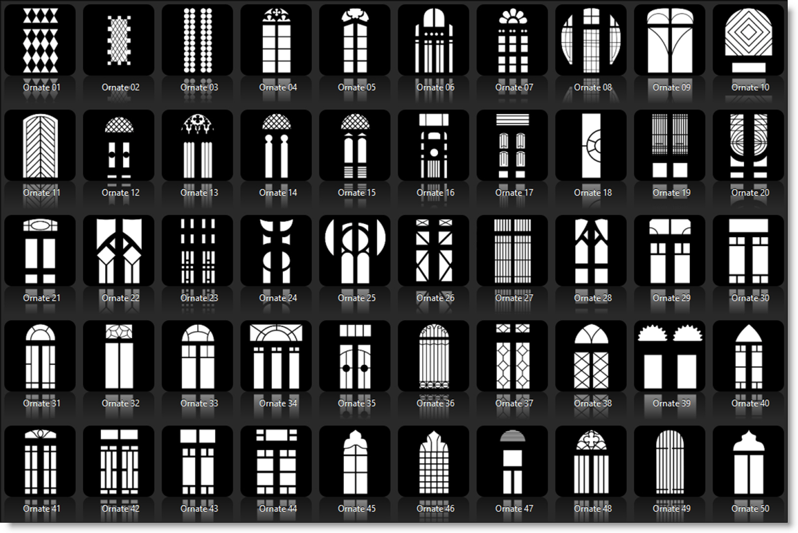
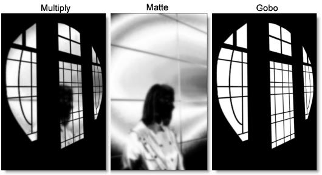
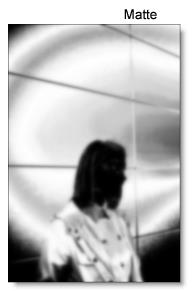

Light
Description
Light can be added to a scene where none existed before just as if you were adding light at the time of shooting. Realistic lighting and shadow is introduced using digital versions of lighting gobos.
Gobos (patterns) are widely used by designers in theatre, film, photography and television to create atmosphere, project scenery, and generally enhance the visual impact of their lighting. Normally used in front of lights during photography, these same exact gobos can be applied digitally to the entire image or inside a matte.
Category
Light.
Presets
To select a gobo, pick one from the Presets window. If you would like to view gobos from a different category, use the pop-up menu at the top left of the Presets window.
Light
Blend
Determines the blend mode to be used to add the light.
Add
The light is added to your image.
Screen
The light is combined with the image using a Screen blend mode. This looks kind of like the Add blend mode, but highlights are retained.
Subtract
The light is subtracted from your image creating shadow instead of light.
Brightness
Sets the intensity of the light.
Displacement
Displaces the gobo by the luminance values of the image. This “fakes” the effect of light wrapping over objects in the image.
Blur
Sets the softness of the light.
Gels
Photographers, cinematographers and lighting designers use colored filters or gels in front of lights. Whatever mood you wish to create, we have the colors needed to achieve the effect. Select one of the Gels presets from the pop-up menu.
Color
Sets the color of the light through the use of a standard color picker.
Shadow
Brightness
Sets the intensity of the shadows. The Brightness parameter will darken only those areas that are not being affected by the Light settings.
Gobos
The gobos are organized into various categories including: Abstract, Doors, Elements, Foliage, Glass, Snowflakes, Textures and Windows groups.
Gobo
Clicking the Gobo > Browse button allows you to load your own image as the light source.
To use your own image as a light source:
• Select Gobo > Gobo > Browse.
• When the file browser opens, navigate to your image and select it.
Blend
The gobo can be added to a matte using a variety of Blend modes. Go to
Blend Modes for explanations of the various modes.
I like the Multiply blend mode for combining gobos with the matte because it only puts the gobo within the areas of the matte.
Opacity
Sets the opacity of the gobo.
Blur
Sets the softness of the gobo.
Transform
Transform your gobo using Position, Scale, Rotate, Corner-Pin, Shear and Crop controls. Go to the
Transform section of Common Filter Controls to see how the Transform Controls work.
Matte
A matte can be used to create areas of light or limit where gobos will be added. Wherever there is white in the matte is where the light will be added. When using the Light and Gobo filters, it is usually helpful to blur the matte. Go to the
Matte parameters to see how they work. 
Note: To use a matte to create light, Gobo > Blend must be set to something other than Gobo Only for the Matte controls to be active.